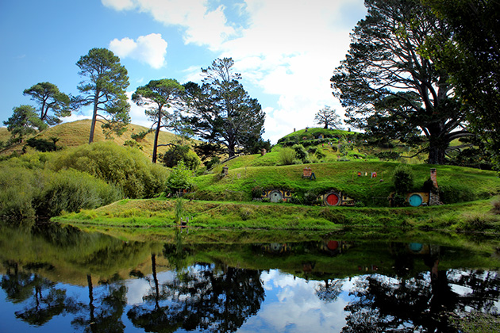

Lord Of The Rings: The Fellowship Of The Ring
Main Content

An amazing achievement, three films in The Lord of the Rings trilogy filmed simultaneously, against the varied backdrops of director Peter Jackson’s native New Zealand, standing in for Tolkien’s ‘Middle Earth’.
Be aware, though, that the locations are spread over both of New Zealand’s islands, and some are pretty inaccessible.
The private Alexander Farm, near Matamata, toward Karapiro in the Waikato area, represented the rolling, bucolic greenery of the Shire, home of Bilbo and Frodo Baggins. In order for ‘Hobbiton ’to blend naturally into the landscape, the extensive set was planted with crops and flowers a year before the cameras rolled. Matamata, which now proudly advertises itself as Hobbiton, has a Tourist Information Centre at 45 Broadway. And the really good news is that, following the success of the films, and the making of The Hobbit, the set has been restored and extended to become a permanent attraction, where you can not only peer at the Hobbit dwellings but also wine and dine in The Green Dragon Inn and The Shires Rest at Hobbiton Movie Set Tours, 501 Buckland Road, Hinuera.
Tongariro National Park, home to three volcanoes: Mount Ruapehu (which is still active), Mt Tongariro and Mt Ngauruhoe proved ideal as the dark rand savage realm of ‘Mordor’ and ‘Mount Doom’, where the ring is forged. Whakapapa Ski Field, on the slopes of Ruapehu, supplied Middle Earth’s snowy slopes and the opening battlefield on the slopes of ‘Mount Doom’, where an alliance of men and elves defeats the armies of ‘Mordor’, and the ring is taken from Sauron.
A quick detour to the South Island: the Southern Alps and the extensive glaciers of South Island became the ‘Misty Mountains’, in which the wretched Gollum hid away in his cave for 500 years with the ring.
Back to the North Island. Otaki Gorge Road, in Otaki Totara Forest in the Manuwatu Region, about 45 miles north of Wellington, was used for the ‘Outer Shire’ woods and roads surrounding ‘Hobbiton’.
Surprisingly, it’s in the centre of the city of Wellington itself that the four Hobbits, Frodo, Sam, Merry and Pippin, are forced to hide under tree roots to evade the Black Rider after escaping with Farmer Maggot’s vegetables. The site was the Town Belt of Mount Victoria, a peaceful park overlooking the city centre and, incidentally, it was the first day of filming Also in Wellington was the town of ‘Bree’, where the Hobbits are supposed to meet Gandalf at the ‘Inn of the Prancing Pony’, but instead meet up with the mysterious Strider. The set was built on the abandoned army camp of Fort Dorset at Seatoun, in Wellington’s Port Nicholson harbour. There’s nothing left of ‘Bree’, but you can see the site from the beach at the end of Burnham Street.
Back north of Otaki, to Keeling Farm in the tiny country village of Manakau, where the Hobbits narrowly escape the ring wraiths by jumping onto the ‘Bucklebury Ferry’ on the ‘Brandywine River’ ferry.
South of Wellington is Waiterere Forest, which became ‘Trollshaw Forest’ and and the woodlands of ‘Osgiliath’.
Harcourt Park, Akatarawa Road, Upper Hutt, 20 miles north of Wellington, became’ Isengard’, the realm of the evil Saruman (Christopher Lee), who has an army of Orcs use ropes to pull down trees to fuel his forge (don’t worry, they were old trees shipped in and erected for the movie). In June 2002, the remains of the tree, with bolts still embedded, could still be seen.
In Kaitoke Regional Park, about 8 miles from Upper Hutt City, the elvish realm of ‘Rivendell’ was built. This is where Frodo recovers from his wound and the Fellowship is formed.
The ‘Silverlode River’ and Galadriel’s swan-boat also filmed here. The ‘Great River Anduin’ is the Hutt River between Moonshine Bridge and Poets Park (rail: Wallaceville).
The woods of ‘Lothlorien’, where Frodo gets help and advice from elf queen Galadriel (Cate Blanchett), are the gardens of Fernside Lodge, a homestead inn about two miles from Featherston, Wairarapa, about 40 miles east of Wellington. Here you can see the White Bridge. And, yes, you can stay here.
On New Zealand’s South Island you’ll find ‘Chetwood Forest’ near ‘Bree’, where the Hobbits first flee, which was filmed on Takaka Hill, between Golden and Tasman Bay near Nelson. Mount Olympus, in Golden Bay in Kahurangi National Park, provided scenes in the ‘Eregion Hills’ and the rough country south of ‘Rivendell’.
Mount Owen became the ‘Dimrill Dale’ hillside and ‘Chetwood Forest’. The spectacular Fiordland region, on the western coast, supplied several locations: ‘Weathertop’ camp, where the ring wraiths catch up with the Hobbits and Frodo is stabbed in the shoulder, is Te Anau. The Arrowtown Recreational Reserve, 15 miles northeast of Queenstown, which was used for the ‘West Road’, ‘Eregion Hills’ and the ‘Misty Mountains’. The ‘Ford of Bruinen’, where Arwen (Liv Tyler) challenges the wraiths “If you want Frodo, come and claim him!, before they are washed away in a flash flood, was filmed on the Shotover River near Arrowtown.
Kawarau Gorge, on the Kawarau River, was the site of the ‘Argonath’, the gigantic statues of the two kings of Gondor past which the Fellowship sails. Wanaka, to the north, on the banks of the Clutha River: the golden plains, where the Black Riders search for Frodo and Orcs attack the Fellowship.
Closeburn, about ten minutes drive west from Queenstown on Geary Road, became the summit of ‘Amon Hen’ (the actual summit filming site isn’t accessible), where Bilbo takes his leave of Strider and the fellowship after Boromir begins to succumb to the ring’s power.
The Paradise area, near the tiny township of Glenorchy at the head of Lake Wakatipu toward the south of the South Island, became ‘Lothlorien Woods’ in the Elven realm of ‘Lorien’, the site of the battle, where Boromir is fatally wounded in the battle with the Orcs and Merry and Pippin are captured. In the Nelson area, Mavora Lakes Park, about 30 miles south of Lake Wakatipu in the Green Stone National Park, became ‘Nen Hithoel’, where Orcs chase the Hobbits out of the bush and into boats on the lake, and Frodo saves Sam from drowning.
Visit Info
Visit The Film Locations
New Zealand
Visit: New Zealand
NORTH ISLAND
Visit: Auckland
Flights: Auckland Airport, Ray Emery Drive, Auckland 2022 (tel: 64.9.275.0789)
Visit: Matamata, State Highway 27, between Hamilton and Rotorua
Visit: Hobbiton
Visit: Tongariro National Park, Manawatu-Wanganui 4691 (tel: +64.7.892.3729)
Visit: Harcourt Park, Akatarawa Road, Upper Hutt
Visit: Kaitoke Regional Park, Akatarawa Valley, Upper Hutt 5372
Visit: Fernside Lodge, Wairarapa (tel: +64.6.308.8265)
SOUTH ISLAND
Visit: Kahurangi National Park, Karamea
Visit: Fiordland National Park, Lakefront Drive, Te Anau 9640 (tel: +64.3.249.7924)
Visit: Kawarau Gorge
Visit: Mavora Lakes Park